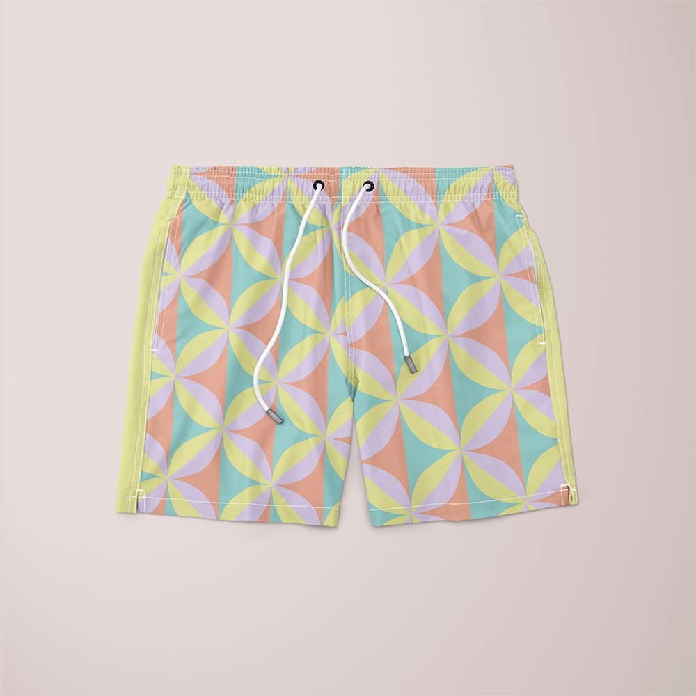

Shorts
Shorts es un proyecto de diseño de patrón aplicado a un producto de moda. A partir de formas geométricas inspiradas en flores, se creó un estampado en tonos pastel pensado para una prenda veraniega y fresca.
El patrón fue construido en Illustrator como una repetición continua, cuidando que el ritmo y la distribución de los colores funcionaran bien al aplicarlo sobre la prenda. Después se presentó en un mockup para ver cómo luciría en un producto real.
